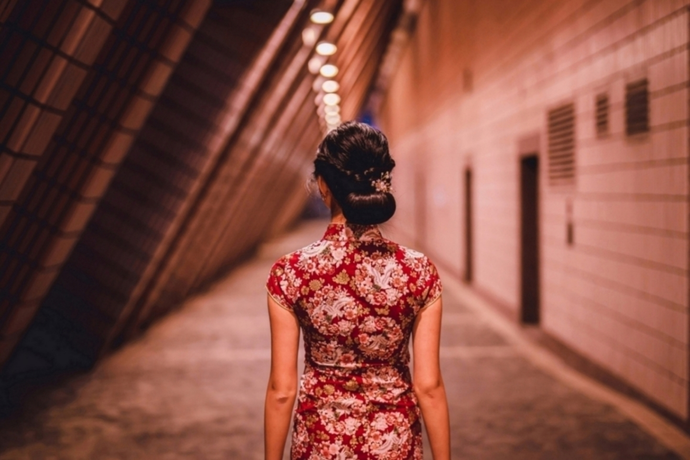
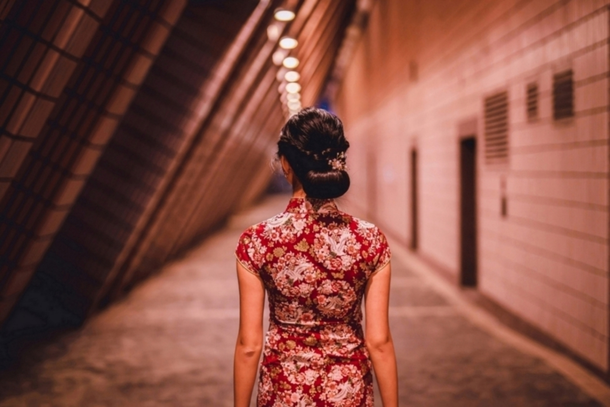
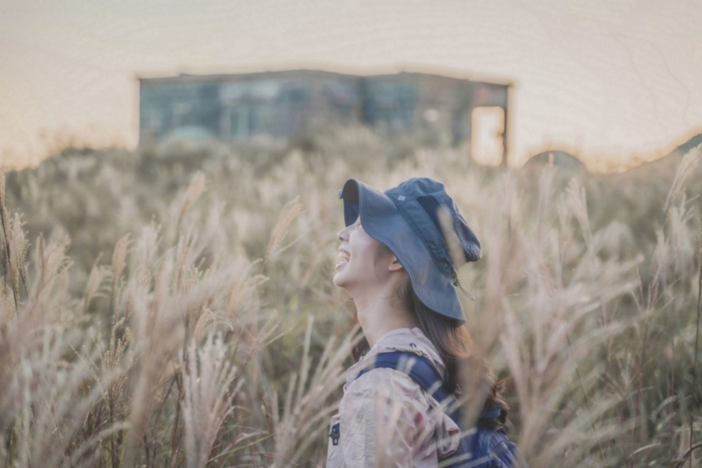
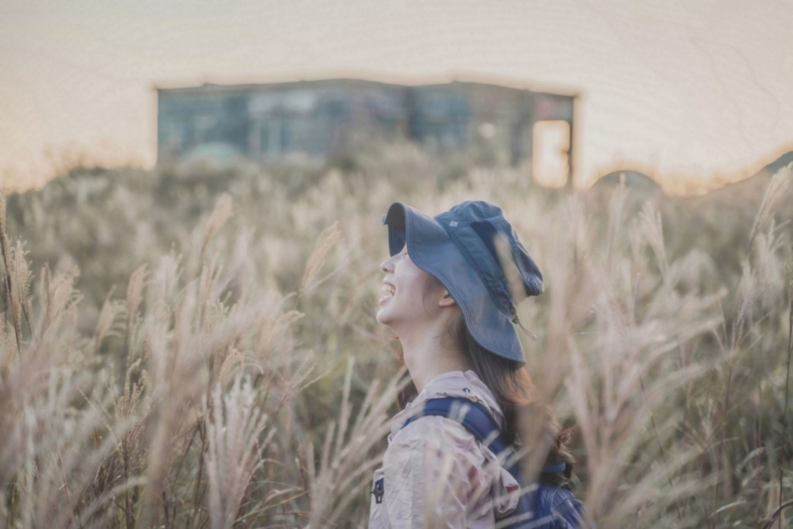
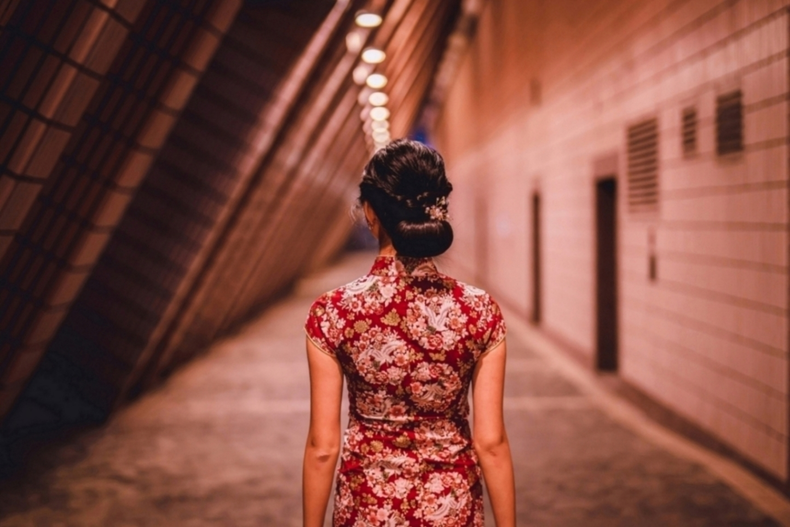
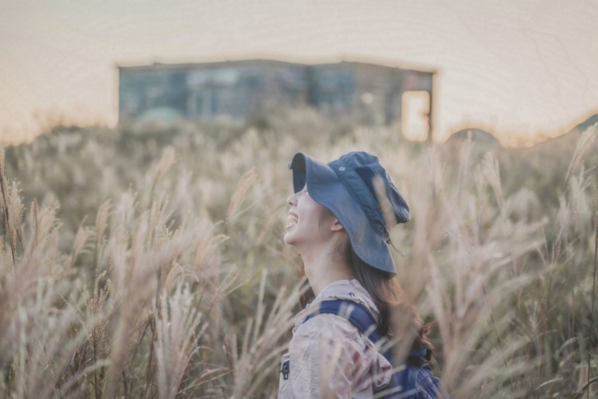

Galerie
Ich mache gerne Fotos, um mein Leben in Hongkong festzuhalten. Unten sind einige meiner Favoriten dargestellt.


 


 



Hallo, mein Name ist Jasmine Zeng. Ich bin in Festlandchina geboren und aufgewachsen. Neben meinem Bachelorstudium im Marketing an der Polytechnische Universität Hongkong, bin ich eine Webentwicklerin und Sprachliebhaberin. Als eine Person, die Selbstverbesserung und persönliche Entwicklung in grossem Masse wertschätzt, sterbe ich andauernd an neue Fähigkeiten zu erlernen, zu beherrschen und mein Wissen auszubauen.
Meine Interesssen weiten sich über die wissenschaftlichen Studien aus zu Programmiersprachen wie HTML, CSS und JavaScript. Mein erster Abstecher in die Webentwicklung war im späten 2021. Ursprünglich wollte ich nur eine Webseite erstellen, auf der ich meine Wandererfahrungen und Fotos anzeigen kann. Jedoch habe ich schnell gemerkt, dass mir die Webentwicklung wirklich viel Spaß macht und ich gerne mehr darüber lernen möchte. Im Moment arbeite ich noch am Frontend, plane aber am Ende des 2022 ins Backend einzusteigen.
Darüber hinaus bin ich eine begeistere Sprachanhängerin. Eine Sprache agiert, wie eine Brücke, die es mir ermöglicht, mich mit Personen und deren Kulturen auf eineren tieferen Level zu verbinden. Aus diesem Grund finde ich es übermässig faszinierend. Momentan lerne ich aktiv Deutsch und Französisch, nachdem ich schon fließend Englisch und Kantonesisch spreche.
Neben den oben aufgelisteten Aktivitäten liebe ich es ausserdem zu Wandern, Geschichts- und Kunstmuseen zu besuchen und lokale Nachbarschaften zu erkunden und ihre Gerichte und Kulturen kennenzulernen.
Ich mache gerne Fotos, um mein Leben in Hongkong festzuhalten. Unten sind einige meiner Favoriten dargestellt.

